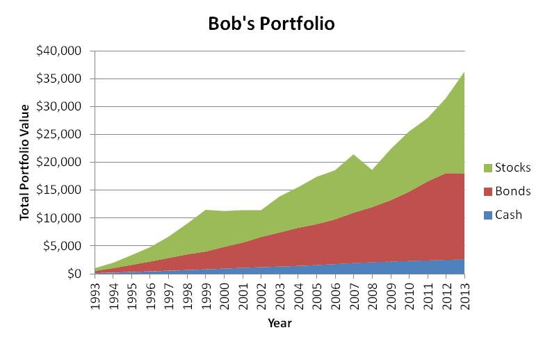
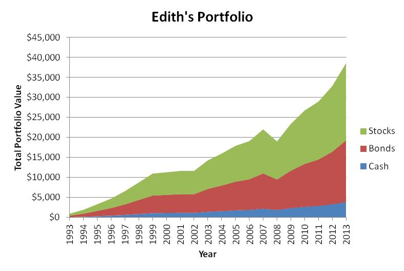
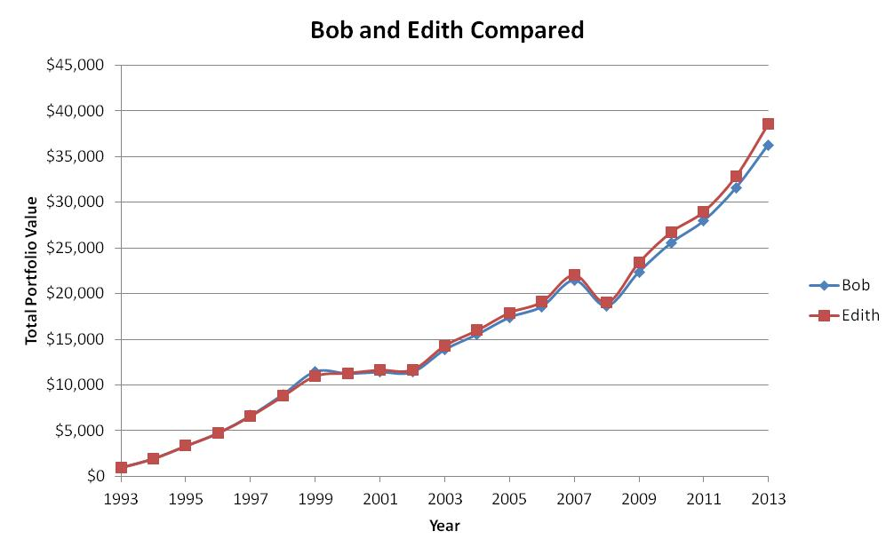

I just talked about diversification. Asset allocation is kind of a related topic. Instead of managing risk by making sure you have several different stocks within your collection of stocks, asset allocation is about spreading your investments out among different classes of things. For example, you might allocate your assets so that 50% of them are in various stocks, 40% of them are in bonds, and the other 10% is in cash type investments. There are a lot of reasons why you might use asset allocation.
Most of the time, investors get more return (over the long haul) if they are willing to accept a larger level of risk. Typically this means that an investment that makes more money on average is going to vary more in how much it makes from year to year. If you are investing in order to save for an event that will happen in 40 years (like retirement), you don't really care very much about year-to-year variation until you get much closer to your retirement date. Therefore, you should probably be invested in things that return a lot and might have wide swings from good years to bad years - pretty much as much variation as you can accept and still sleep at night. If you are saving for something like a down-payment on a house in five years, you would want to be in much steadier investments, because you don't want to have your money in something that could have four or five bad years between now and when you want to buy the house. Someone in her twenties saving for retirement might have 80% of her investments in stocks and 20% in bonds. Someone saving for a house down-payment might do exactly the opposite. (Keep in mind that in Canada, in the last 30 years, bonds have done very well compared to stocks. A US investor would definitely want to have long-term money in stocks, but it's a lot less clear-cut in Canada.)
One statistic I've seen is that 90% of the difference you can make in how much of a return you get from your investments is in your choice of the *kinds* of assets you put your money in, and only 10% results from your choice of which mutual fund, or ETF, or basket of individual stocks or bonds you choose.
Hey, didn't we have the same Reason #2 under diversification? Yes, and it's more or less the same Reason #2. Just like with individual stocks, different classes of assets will often have up years at different times. For example, you might have an asset allocation that calls for half your stocks to be in the US market and half in the Canadian market. Canada and the US don't always have good stock market years at the same time, so you would tend to smooth out the curve, just like Bob and Edith did with their two stocks. If you add in a certain percentage of stocks from Europe, and maybe also add in some investments in funds that specialize in real estate or in precious metals, your curve will smooth out even more.
This is a really interesting one. One of the great/dumb investment tips is that you should buy low and sell high. Obviously you make money if you do that, but how do you figure out when to buy and sell so that happens? Lots - and I mean LOTS - of investors get caught up chasing the thing that did really well in the last year. They pour their money in after it had a great return and often find that the thing turns down after that. People also tend to stick with an investment that is going up, because it's done so well they just want it to continue. They don't sell it until after it crashes - which is sometimes just when it's about to go back up. There's a lot of emotion in all of this, and it definitely costs people money.
So how do you impose some kind of discipline on yourself so you won't be one of those dumb people? Asset allocation is one possible answer. Let's say you decide you're going to use the allocation above in the first paragraph: 50% stocks, 40% bonds, and 10% cash. You choose three mutual funds and you put $5000 in the stock one, $4000 in the bond one, and $1000 in the cash one. A year later, the stock one is up to $5500, the bond one is only at $4100, and the cash one is at $1020. Your percentages are now 51.8%, 38.6%, and 9.6%. If you weren't putting any more money in, you would rebalance by moving $190 out of your stock fund and putting $148 of it into the bond fund and the other $42 into the cast fund. You're selling a bit of the stock fund, because it's high, and you're putting the money into things that didn't perform as well but are also less risky. If your stock fund went down the next year, and the bond and cash funds went up (or at least didn't go down much), you would shift money out of them and back towards stocks. So you'd be selling stocks when they're high and buying them when they're low.
Sometimes you don't have to do your rebalancing by moving stuff from one account to another. If you are in the stage where you are growing your investments, you can just rebalance by choosing which accounts to put new deposits in each year. Similarly, later in life when you are taking money back out, you can take the most out of the accounts that are the farthest over your target mixture.
Here is a table of returns for three investments we have used for a long time in our US retirement accounts:
If you just scroll your eyes down that table, you can see that the stock investment has much wider swings than the cash investment, but on average has higher returns. The bond fund is in between.
Bob (remember Bob?) decided to invest $1000 in his retirement account every year, beginning at the beginning of 1994. He uses the above three investment choices, and he decides to always put $100 in the cash fund, $400 in the bond fund, and $500 in the stock fund. He doesn't make any attempt to rebalance anything. This is what results:

Meanwhile, Edith started investing the same year, but at the end of each year, she calculates what percentages the three investments have reached. She adds $1000 each year, just like Bob, but she puts more in the funds that are below their percentage targets. Sometimes she also moves money from a fund that is high to one that is low. At the beginning of each year, after her new deposit, her three accounts are always back to 10%-40%-50%. This is what results:

Okay, you can't really see it very well, but it did end up a bit higher. Let me put them both on the same graph:

Granted, it's not that dramatic a difference, but Edith certainly did do a bit better, and it looks like the red line is also a bit less jagged than the blue one. So that's what asset allocation is about. I'm sure there will be more about this topic in future notes.
 To Previous Canto
To Previous Canto  To Next Canto
To Next Canto
 Home
Home